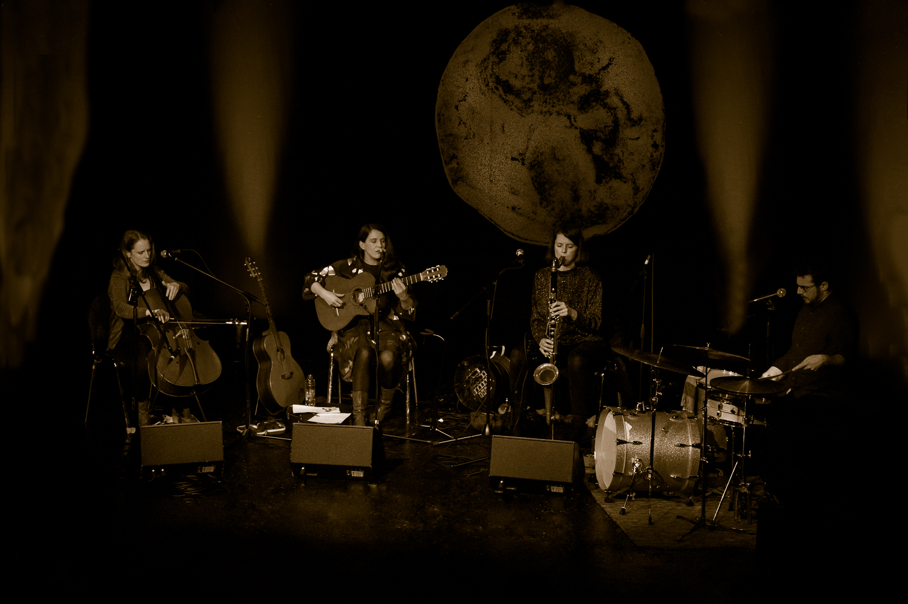

Monday 27th March
Album Release Tour
So we're all done and dusted with our Round Soul of the World release tour. A huge, huge thanks to all who came out to support us! We had a disastrous beginning and a glorious ending, and much fun in between.
Matthew's broken wrist still wasn't healed up so we had more one-handed drumming. Meanwhile I (Laura) put my back out and spent the duration of the tour necking a cocktail of muscle relaxants, anti-inflammatries and pain killers, whilst toting around a hot water bottle on stage. And Donal Dineen burnt his hand investigating his over-heated car engine and had to cancel altogether. Ah but the show must go on!
We hit hometurf at the Wexford Arts Centre on Thurs, then on to Dublin on the Friday for a very lovely night at the Fumbally Stables - well-fed and watered prior to the gig! Thank you Margie Lewis & Co!
Saturday at the Black Gate in Galway was a hoot. I discovered Peadar King (who runs the place) and I had met donkey's years ago at one of his aunt's events out on Inis Boffin. We will be back at the Black Gate soon I hope - do check it out if you are in Galway!
Jude and I had somewhat of an odyssey en route to Cork from Galway. Blame it all on our learning 'Martha the sweet flower of Strabane' - an air so maudlin and sad that were nearly in Tralee by the time we noticed we'd missed the turnoff for Cork City. As ever, there was a fantastic welcome from the folks at Gupld in the Triskel Arts Centre, and our last gig was the finest of the tour.
Cant' wait for the next one - watch this space!